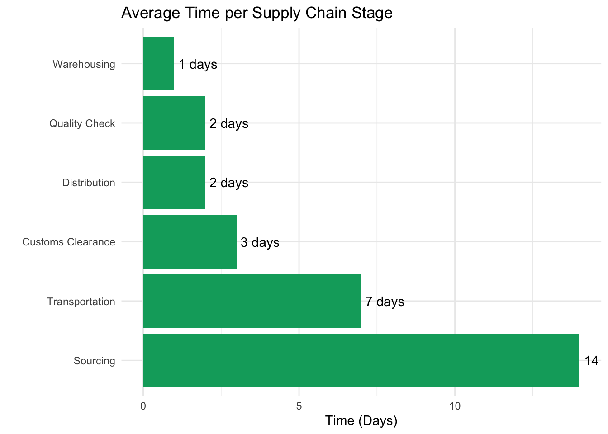
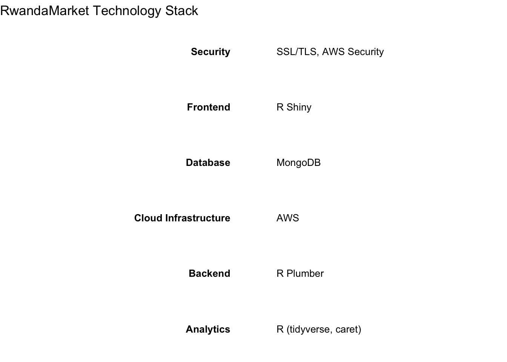

Operations Plan
The RwandaMarket operations plan outlines our key processes and systems that enable us to efficiently source products from Rwanda, manage inventory, fulfill orders, and provide B2B services.
Supply Chain Management
1. Sourcing
- Direct partnerships with Rwandan artisans and cooperatives
- Regular sourcing trips to Rwanda (quarterly)
- Quality control checks at source
2. Transportation
- Air freight for perishables and high-value items
- Sea freight for bulk, non-perishable goods
- Customs clearance process with dedicated partners
3. Warehousing
- Central warehouse located in [PLACEHOLDER: Specific area in Nairobi]
- Climate-controlled storage for sensitive products
- RFID-based inventory tracking system
Inventory Control Systems
- R-based predictive analytics for demand forecasting
- Automated reorder points based on sales velocity and lead times
- Real-time inventory updates across e-commerce and physical store
Order Fulfillment Process
- Order received (e-commerce platform or in-store)
- Order verification and payment processing
- Inventory allocation
- Picking and packing
- Quality check
- Shipping/delivery arrangement
- Order tracking information sent to customer
- Delivery confirmation and feedback request
Customer Service Protocols
- Omnichannel support: Phone, email, chat, and social media
- 24/7 chatbot for basic inquiries and order tracking
- Escalation process for complex issues
- Regular team training on product knowledge and customer service skills
Technology Infrastructure
E-commerce Platform
- Custom-built using R Shiny for frontend and Plumber for API
- Integrated with inventory management and CRM systems
- Mobile-responsive design
Data Analytics
- R-based analytics engine for business intelligence
- Real-time dashboards for key performance indicators
- Machine learning models for demand forecasting and customer segmentation
Security Measures
- End-to-end encryption for all transactions
- Regular security audits and penetration testing
- Compliance with data protection regulations in Kenya and Rwanda

This operations plan ensures that RwandaMarket can efficiently manage its supply chain, inventory, order fulfillment, and customer service, all supported by a robust technology infrastructure.